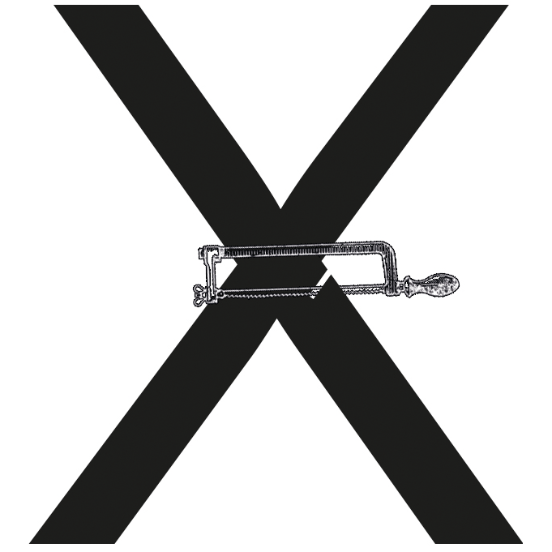
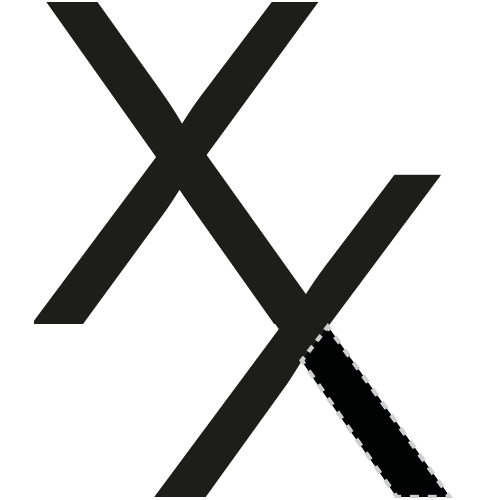
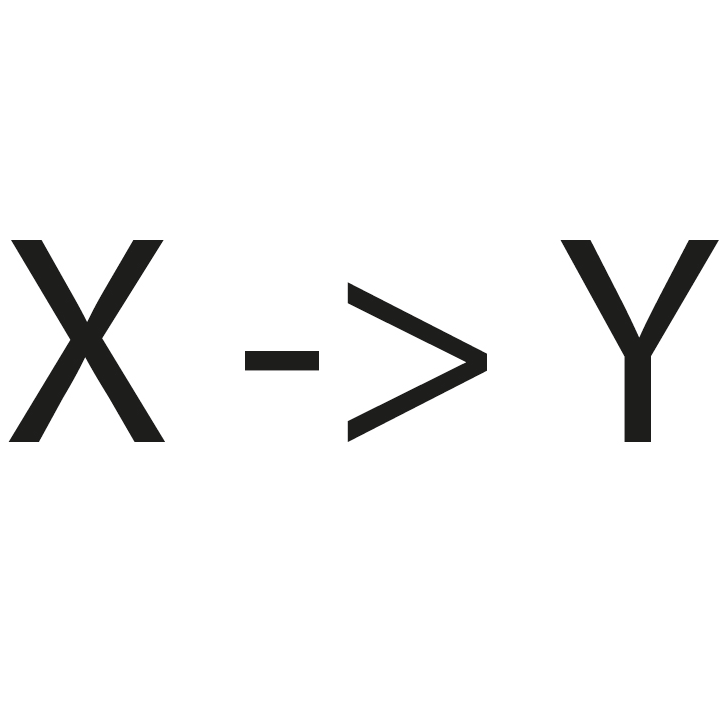
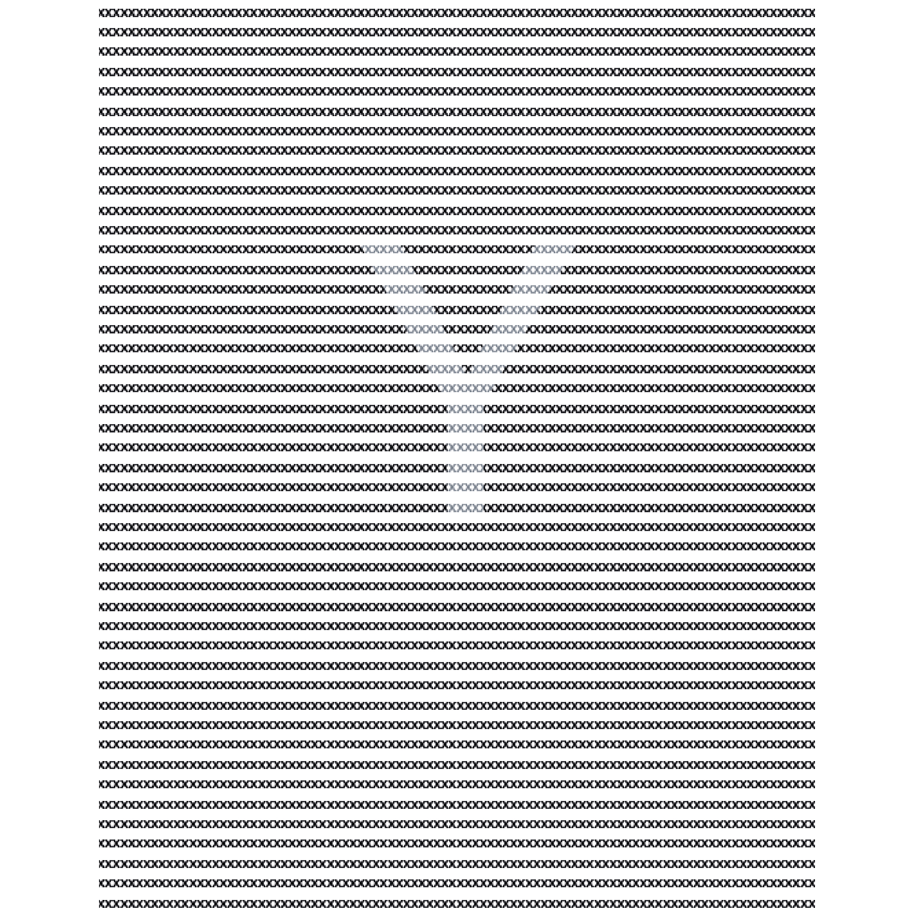
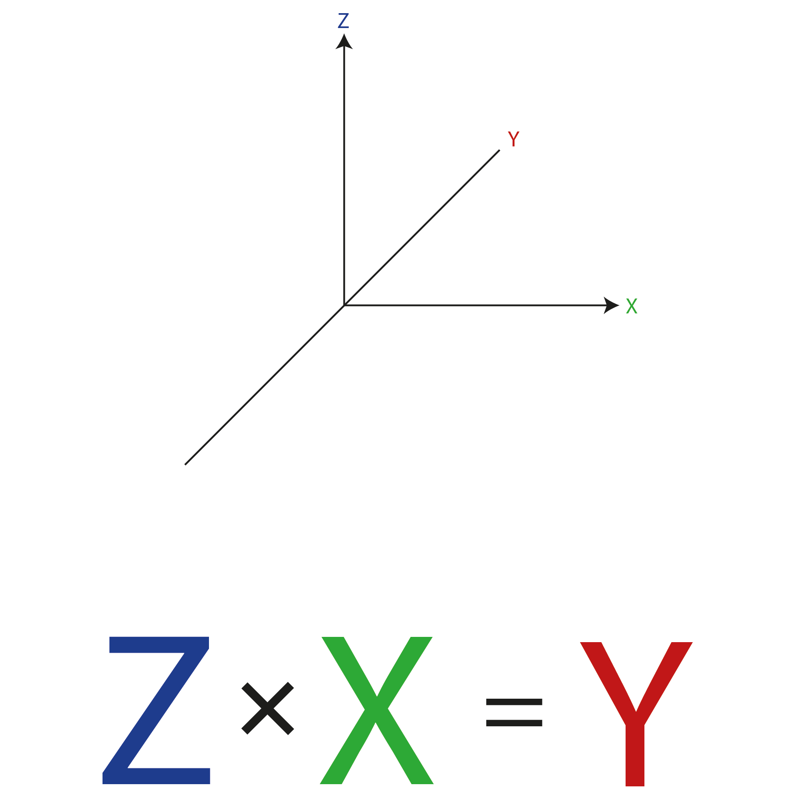
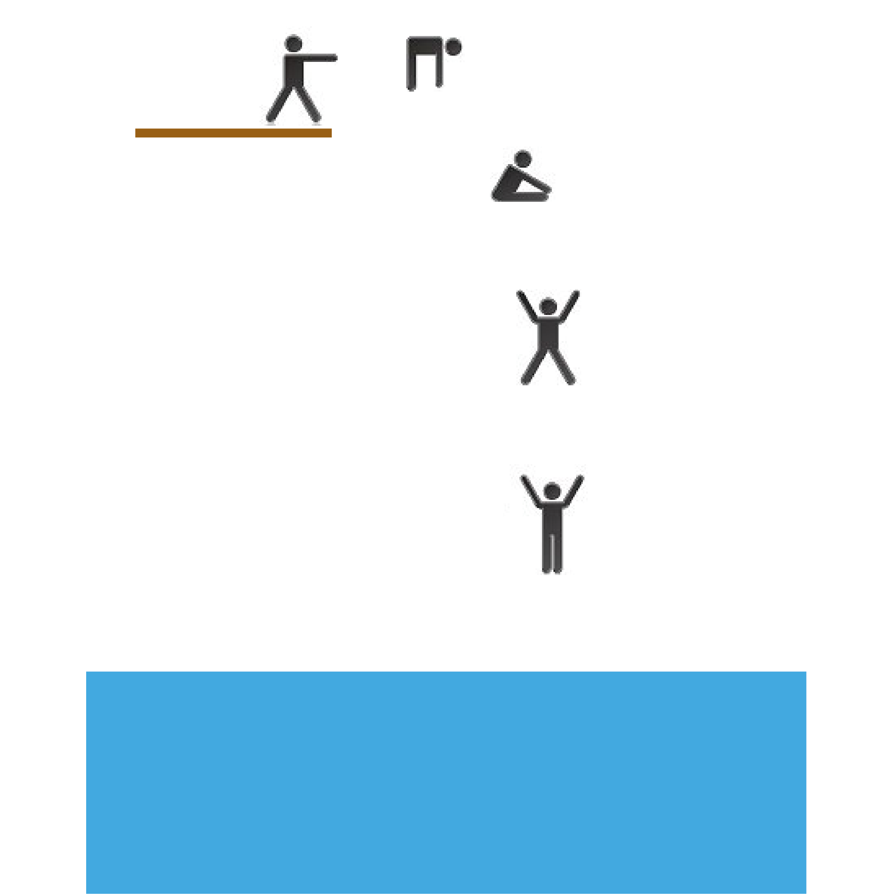
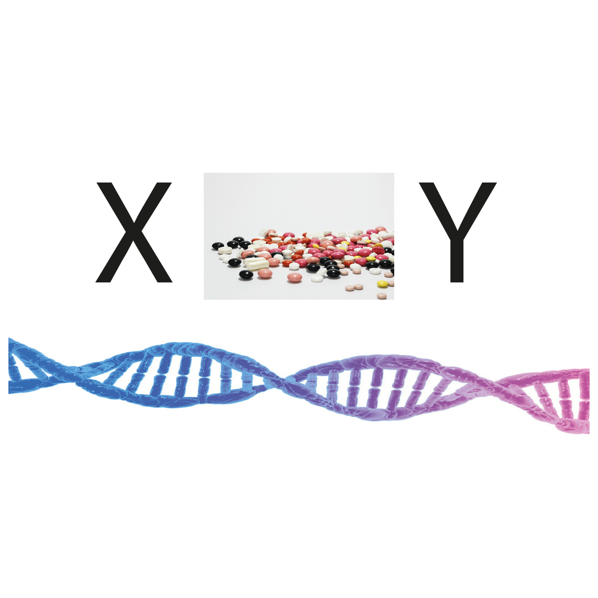

Die Aufgabe besteht darin, 10 Bilder zu erstellen. Das Thema war bei mir aus "X wird Y". Hinter dieser komischen Aufgabe versteckt sich eine Übung: Nachdem man einige Ideen umgesetzt hat (bei mir etwa 6) fängt man an die Grenzen aus zu loten. Daher man muss um Ecken denken damit man auf diese 10 Exemplare kommt. Dies hilft später beim Ideen finden. Es kann nämlich durchaus sein, dass die letzten Ideen dann etwas Besonderes sind oder dann zum Konzept werden um eine Idee weiter zu spinnen.







Reflektion
Diese Übung war mühsam. Später habe ich festgestellt, dass diese Übung sehr praktisch sein kann um festgefahrene Ideen aufzubrechen. Meist hat man sehr schnell schon eine Idee oder Vision und man versucht dann direkt diese Idee umzusetzen. Wenn man sich dann an diese Aufgabe setzt und findet vielleicht neue Inputs und andere Ansichten die einem weiterhelfen.